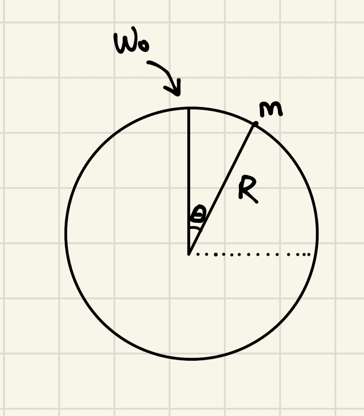

Backlinks
Given a vector \(\vec{r}\), \(\dot{\vec{r}}\) is orthogonal to \(\vec{r}\). Because dot products.
1 The Swinging String Problem

Mass \(m\) is in circular motion on a string such that the velocity is minimal at the top such that it stays in circular motion. We disregard air friction.
We ask: what is the acceleration at \(\theta = \frac{\pi}{2}\)?
1.1 Analyzing behavior at the bottom

We know that \(\vec{F_{net}} = m\vec{a_{cm}} = \vec{T} - mg\). We know that \(\vec{T}\) is in uniform circular motion: that \(\dot{r} = \ddot{r} = 0\), and that, because \(\vec{T}\) is pointed always towards the center of the circle, we could claim that \(m\vec{a_{cm}} = \vec{T}(-\hat{r}) + mg(-\hat{z})\) (that the net force is, per the Hurwitz diagram above, the force of gravity subtracted.
We know that, given that \(\dot{r} = \ddot{r} = 0\):
the acceleration in the \(\vec{r}\) component (which would be the magnitude of \(T\)), would be
\begin{equation} \vec{a_r} = \hat{r}(\ddot{r}-r\omega^2) \end{equation}Without a \(\ddot{r}\), the expression becomes:
\begin{equation} \vec{a_r} = -\hat{r}r\omega^2 \end{equation}Therefore. \(-\hat{r}r\omega^2 = \vec{T}\).
\begin{align} m \vec{a}_{cm} &= \vec{T}(-\hat{r}) + mg(-\hat{z}) \\ &= -mr{\omega_1}^2\hot{r} - mg\hat{z} \\ \end{align}Therefore:
\begin{equation} \vec{a} = -r{\omega_1}^2\hot{r} - g\hat{z} \end{equation}The "only" problem is… what's \(\omega_1\)? To do that, we first figure \(\omega_0\) and do energetic calculations.
1.2 Calculating \(\omega_0\)

We know that, from the above diagram, that:
\begin{equation} \vec{F_{net}} = -mg = -mR {\omega_0}^2 \end{equation}(what happened to the result of the circular motion acceleration in the radial component? see above: basically b/c \(\ddot{r}=0\). What happened to the acceleration of circular motion in the tangential component? it doesn't matter, that's orthogonal to the direction we wish to analyze.)
Therefore, solving for \(\omega_0\).
\begin{align} &-mg = -mR{\omega_0}^2 \\ \Rightarrow &\,g = R{\omega_0}^2 \\ \Rightarrow &\,{\omega_0}^2 = \frac{g}{R} \end{align}1.3 Getting \(\omega_1\) from \(\omega_0\).
We use energy! Based on conservation of energy:
\begin{equation} E_1 = E_0 + W_T \end{equation}"energy at the bottom of the spin is equal to the energy at the top of the spin plus any additional work that the string's tension did.
Except this: the string's tension do no work. because the dot product between the force (pulling inward towards the centre) and velocity (tangent to the circle) is 0 (the two vectors are perpendicular. Hence, we could claim that:
\begin{equation} E_1 = E_0 \end{equation}We then endeavour to find out what \(E_0\) is. We set the zero point of potential energy as \(z=0\).
The previous deduction means that, at the top of the spin:
\begin{align} E_0 &= PE_0 + KE_0 \\ &= mgR + \frac{1}{2}mR^2 {\omega_0}^2 \end{align}(wat why is \(v = R\omega_0\)? because that's the definition of \(\omega\), angular velocity. The velocity tangent is therefore just how much it spins (radians per second) times the radius, which would give your circumferences per second, which is velocity.)
This equals to \(E_1\), at which point \(mgR = 0\), hence:
\begin{align} \frac{1}{2}mR^2 {\omega_1}^2 = mgR + \frac{1}{2}mR^2 {\omega_0}^2 \end{align}2 Solving Newton's Law Problems, A Guide
- Diagram, Free Body Diagram, Hurwitz Diagram (all three are non-negotiable)
- Select a choordinate system
- Apply Newton's Second Law on the diagram that we made. Occasionally we need Newton's third law
- Apply the constraints + information given of the problem to the problem mathematically
- Decompose your vector equations into their constituent components
- Count your number of unknowns and number of equations
- Do dimensional analysis
Use Design Thinking?